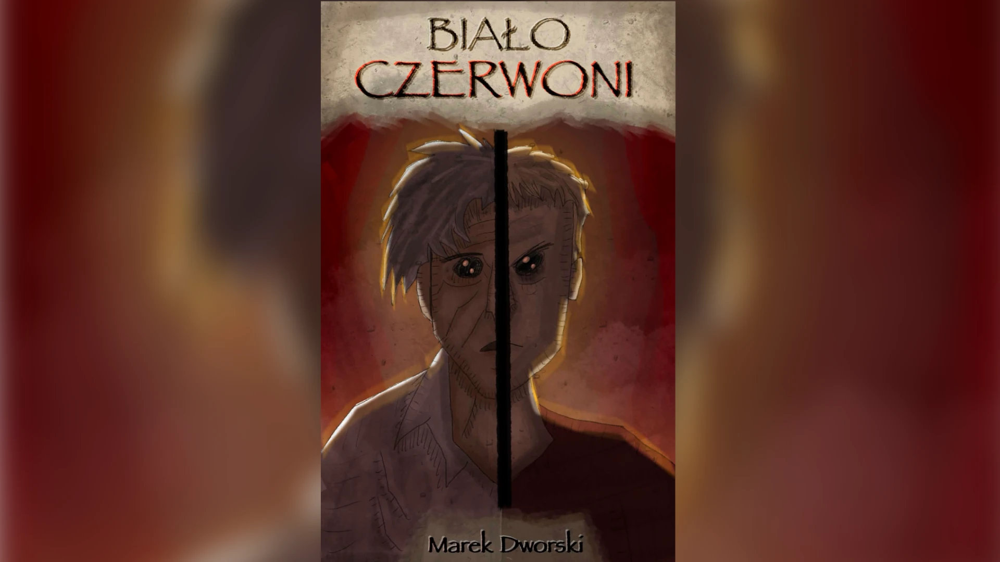

[USUNIĘTO]
Próba odzysku danych... 404. Prawda nie istnieje.
ANOMALIA PAMIĘCI
Ilustracje wymazane przez cenzurę. Twoje myśli są monitorowane.

WIRUS_PRAWDY.exe
Pobranie grozi nieodwracalną zmianą świadomości.